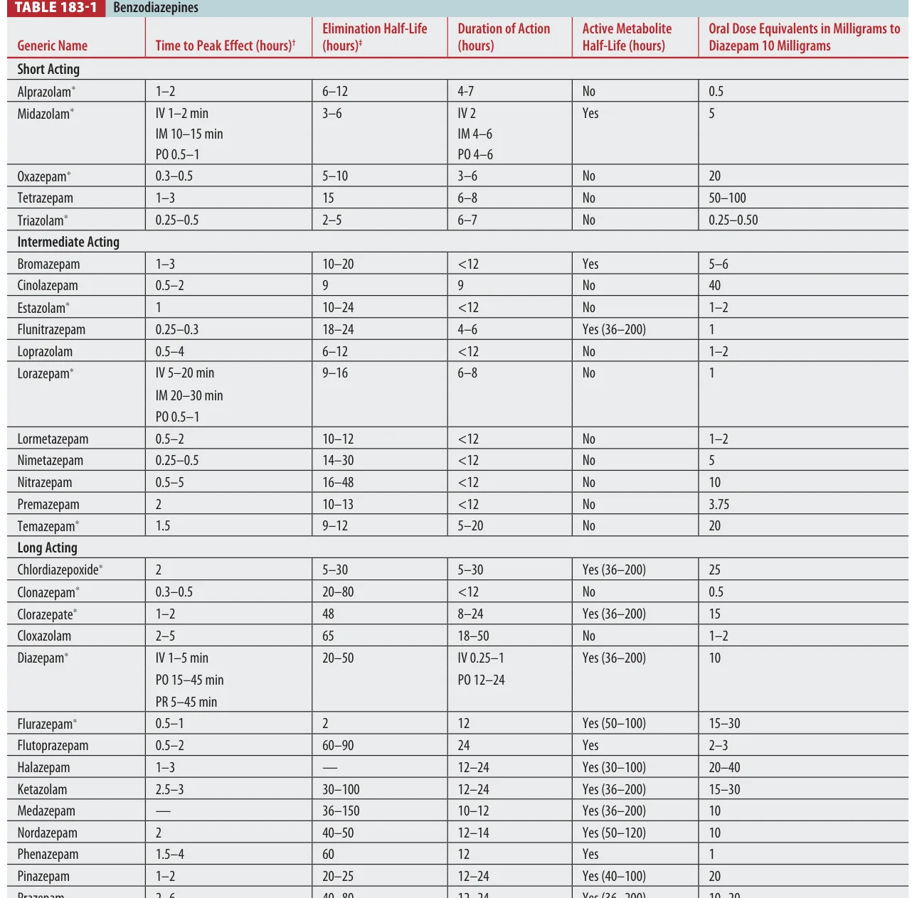
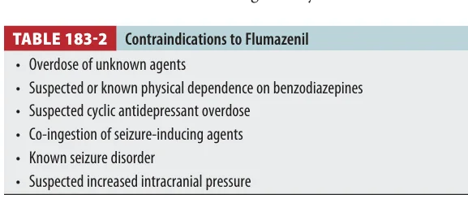
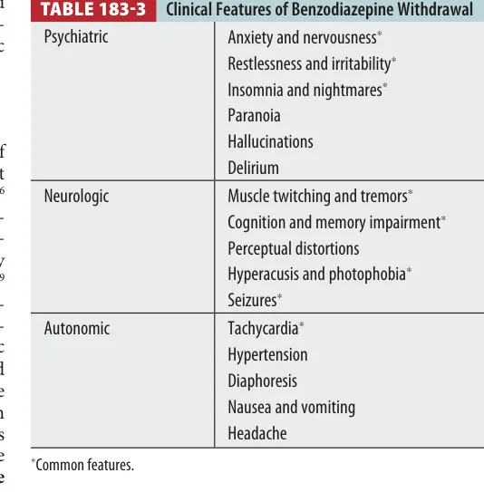

Isolated benzodiazepine overdose is usually a supportive-care sedation case. The danger rises when the stem adds opioids, alcohol, other sedatives, advanced age, lung disease, or procedural IV dosing.
Board lens: do not reflexively give flumazenil. It can precipitate seizures in dependent patients, TCA/coingestion cases, or patients taking benzodiazepines for seizure control.
Overview
Six core effectsSedative, hypnotic, anxiolytic, amnestic, anticonvulsant, and muscle-relaxant.
Low mortality alone Death from isolated benzodiazepine ingestion is rare; mixed overdoses drive morbidity.
Higher-risk agents Alprazolam, temazepam, and triazolam are associated with more ICU admission, coma, and mechanical ventilation than diazepam-like agents.
ED problem Decide whether this is pure sedation or a mixed/toxicologic masquerade that needs airway support and broader evaluation.
Tintinalli Source Check
Table 183-1 is the reference map for peak, half-life, duration, active metabolites, and diazepam-equivalent dosing.

Tintinalli Table 183-1. Benzodiazepines.
Pharmacology and Kinetics
Benzodiazepines stimulate the alpha subunit of the postsynaptic GABA-A receptor and increase the frequency of chloride channel opening. This hyperpolarizes the neuron and produces sedation, anxiolysis, anticonvulsant effect, and muscle relaxation.
Compare with barbiturates: benzodiazepines increase opening frequency; barbiturates increase opening duration and can directly open channels at high doses. That is why benzodiazepines are generally safer in isolated overdose.
Serum half-life does not perfectly predict acute duration because highly lipophilic agents can rapidly redistribute out of the CNS. Lorazepam and midazolam are more reliable IM/IV choices than many other agents; diazepam can be rectal and midazolam can be intranasal/buccal with variable absorption.
SevereRespiratory depression and hypotension are uncommon in isolated oral overdose but can occur with IV dosing, coingestions, elderly patients, or chronic cardiopulmonary disease.
Paradoxical reactionsExcitement, anxiety, aggression, rage, delirium, or violent behavior can occur, especially in children or psychiatric patients.
Propylene glycolLarge parenteral diazepam/lorazepam exposure can contribute to acidosis, nephrotoxicity, and hyperosmolar states.
Never stop at “benzo OD” if the patient is crashing: profound coma, shock, or persistent hypoventilation should trigger search for opioids, alcohols, barbiturates, clonidine, hypoglycemia, sepsis, head injury, or other coingestions.
Diagnosis
Testing is limited. Serum benzodiazepine levels correlate poorly with clinical status and are not routinely indicated. Urine screens often identify metabolites rather than the parent drug, may miss some agents, and can remain positive for days to weeks.
Minimum ED workupGlucose, vitals, oxygenation/ventilation assessment, ECG, pregnancy test when relevant.
Intentional/unclearAcetaminophen, salicylate, ethanol, opioid screen/clinical trial of naloxone when indicated, and broader coingestion search.
False positivesOlder immunoassays reported false positives with oxaprozin and sertraline.
Clinical endpointRespiratory status and mental status matter more than drug screen positivity.
Treatment
Supportive Care
Provide airway positioning, oxygen, capnography/ventilation support when needed, IV access, glucose correction, and observation. Activated charcoal is usually not helpful because mental status depression increases aspiration risk and outcomes are usually good with supportive care alone.
Coingestion Treatment
If opioids are possible, give naloxone clinically. If persistent coma or shock exists, broaden the differential rather than escalating benzodiazepine-specific testing.
Elimination techniques: forced diuresis, hemodialysis, and hemoperfusion are ineffective for benzodiazepines.
Flumazenil
Flumazenil is a selective benzodiazepine antagonist, but its ED use is narrow. It is most reasonable for iatrogenic procedural sedation reversal or a highly selected benzodiazepine-naive patient with isolated exposure and no seizure risk.
Tintinalli Source Check
Table 183-2 is the “do not give flumazenil” table.

Tintinalli Table 183-2. Contraindications to flumazenil.
Avoid if unknownUnknown overdose, suspected TCA, seizure-inducing coingestion, seizure disorder, increased ICP, or chronic benzodiazepine dependence.
RiskSeizures can be difficult to treat because receptor antagonism blocks benzodiazepine rescue.
Duration mismatchFlumazenil half-life is short; resedation can occur when the benzodiazepine outlasts it.
Benzodiazepine Withdrawal
Tintinalli Source Check
Table 183-3 organizes withdrawal into psychiatric, neurologic, and autonomic symptoms.

Tintinalli Table 183-3. Clinical features of benzodiazepine withdrawal.
Withdrawal can develop after chronic use, especially after abrupt cessation. Short-acting agents can produce symptoms within days; long-acting agents may present later. Severe withdrawal can cause delirium, psychosis, autonomic hyperactivity, and seizures.
Treatment idea: stabilize acute severe withdrawal with benzodiazepines, then taper slowly or convert to a long-acting agent when appropriate. Inpatient care is needed for seizures, delirium, or psychosis.
Drug Dose Reference
Drug / intervention
Adult dose
Pediatric dose
Use
Naloxone
0.04-0.4 mg IV/IN/IM, titrate; higher doses if apnea persists
0.1 mg/kg IV/IN/IM, max initial 2 mg
When opioid coingestion is possible and respiratory depression exists.
Flumazenil
0.2 mg IV over 15 sec; repeat 0.2 mg q60 sec to 1 mg, max 3 mg in Tintinalli text
0.01 mg/kg IV, max 0.2 mg per dose; repeat carefully